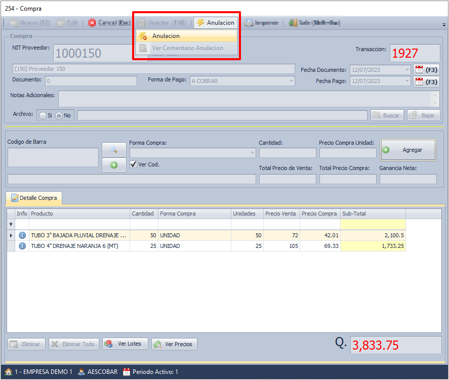
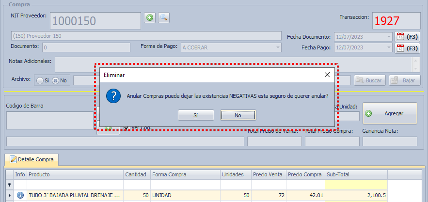
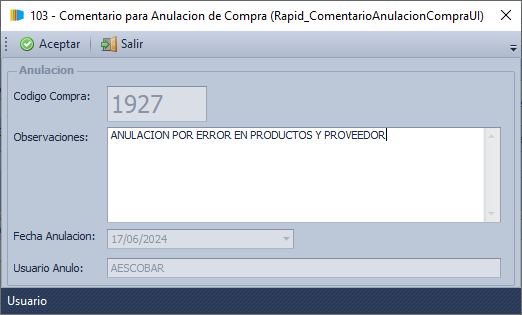
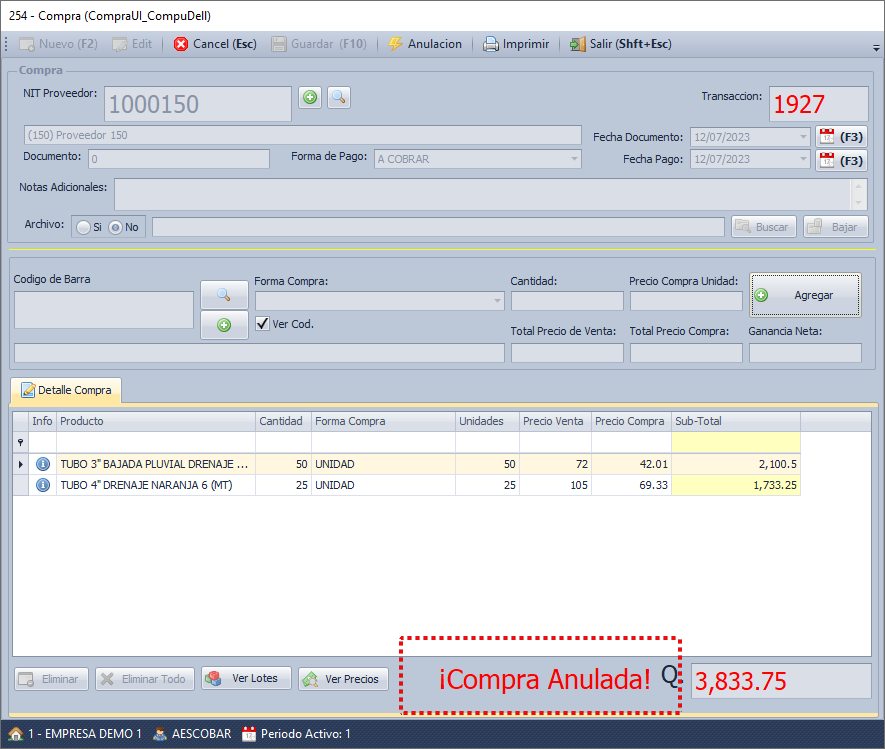
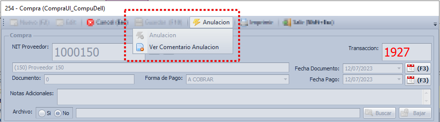
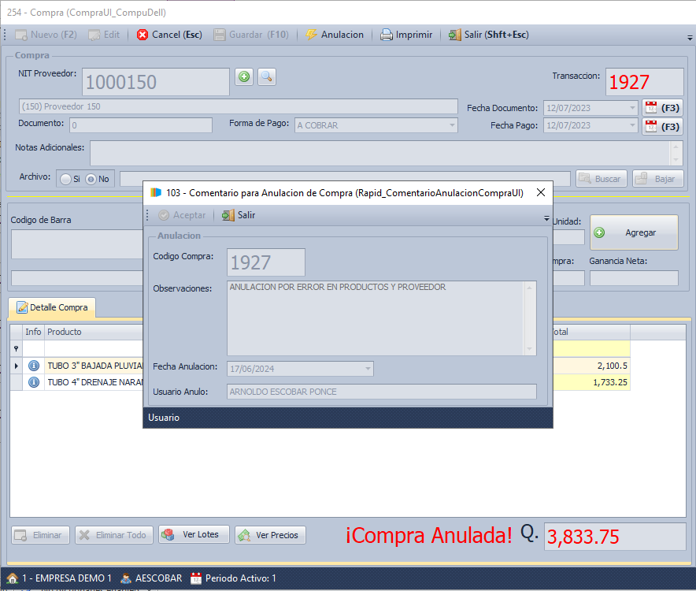

Anulaciones de Compras (17/06/2024)
En ocasiones, puede ser necesario revertir una compra registrada debido a errores, cambios en las necesidades de la empresa, o problemas con los proveedores. El módulo de Anulaciones de Compra en nuestro sistema ERP está diseñado para manejar estas situaciones de manera eficiente y precisa, garantizando que el inventario y los registros financieros reflejen la realidad de las transacciones.
Proceso de Anulacion:
1. Consulte la compra que desea anular, y de clic en el menu "Anulacion" y luego en la opcion "Anulacion"

2. El sistema muestra una advertencia, valide si es totalmente necesario realizar esta anulacion, si es asi proceda dando clic en el boton "Si"

3. Ingrese una observacion para poder realizar la anulacion, se recomienda escribir el motivo de la anulacion indicando fechas, numeros de documentos y todo lo que sea necesario para justificar la anulacion.

Finalmente la compra fue anulada y sera facilmente visible esto pues la compra tendra una frase que indicara que fue anulada, este proceso hizo que la existencia deje de estar disponible.

Si es necesario se puede consultar el motivo de la anulacion en la opcion abajo de "Anulacion", en la opcion "Ver Comentario Anulacion"

La informacion que se puede consutar es:
